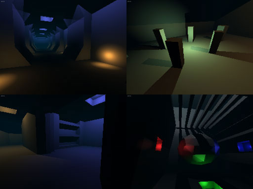

UArch/USRender
UnrealScript Renderer
it is not an actual render device, but instead draws the entire scene onto the canvas
the calculations are all per-pixel which gives the renderer realtime lighting and shadows specular and hopefully other effects in the future 
the renderer is extremely slow (for obvious reasons) and the renderer runs best at 40x30 to 64x48 it cannot render meshes(only renders the collision cylinders) which makes it quite useless really but it was intresting to make
will update description later
First Test version
black and white lighting only, very simple lighting calculations (no surface normal taken into account) so surfaces lack definition
the cylinder on the bottom left picture is a bot 
a short video is available here:
http://uarch.dyndns.org/ur/_Render.avi 3.3MB
Second version
huge step up from the previous version with colored lighting, specular, and distance fog
this version also lets you take screnshots much larger than the "render resolution" and has settings to enable/disable certain features
some higher resolution pictures which were taken at 256x192(i think) (actual render resolution was 40x30)

also below are 4 comparison screenshots, taken from DM-TDC-Derdak made by Derdak2rot for the theme design contest pack which is available at nalicity http://nalicity.beyondunreal.com/map_hub.php?mid=9122
on the left are normal screenshots of the map and on the right are screenshots with the unrealscript renderer
Future plans
volumetric and raytraced fog and possibly some additional lighting effects like coronas or bloom
will probably move this to 2k4 for performance reasons
The Code
Light Calculation |
>> |
Version 3
this was actually done quite a while ago but i forgot to update this page
version 3 features volumetric lighting, soft shadows ambient occlusion, fisheye and panoramic rendering and also a crappy global illumination method which pushes the render time up by several hours..and doesnt look too great either having soft shadows and gi basically makes it non-realtime since it takes too long to render each frame
pics:
![[pass_materials]](images/pass-materials.jpeg) solid color material pass ![[pass_light]](images/pass-light.jpeg) lighting pass ![[pass_softlight]](images/pass-softlight.jpeg) lighting with soft shadows volumetric light, i know..it looks terrible ![[pass_gi]](images/pass-gi.jpeg) global illumination pass |
|
![[roomrender_color]](images/roomrender-color.jpeg)
![[globalillum_fisheye]](images/globalillum-fisheye.jpeg)
![[panoramic_2]](images/panoramic-2.jpeg)
![[pass_final]](images/pass-final.jpeg) final scene rendered at 800x600 with high settings, i cant remember how long this took, i left it on overnight |
Todo:
work on the realtime renderer a bit more
add better(more evenly distributed) raytracing for soft shadows and global illumination
translucent materials
anti aliasing
Feedback
Xian: WOW, very impressive. I look forward to seeing the next version, keep up the good work It's nice to see another fellow UT developer, since so many moved to UE2 (UT2004 in particular).
UArch should probably update this at some point, light calculation code above is old and..well..crap
UArch should have a nifty update to this code soon, added some optimizations to the renderer mostly to do with soft shadowing and gi, added support for "plug-ins" (dynamically loaded static-classes to add custom ray-tracing methods and such)
gi is still really noisy and well...it sucks to put it simple ;P i need to find an even hackier and faster method!..in uscript i think this may be an impossibility